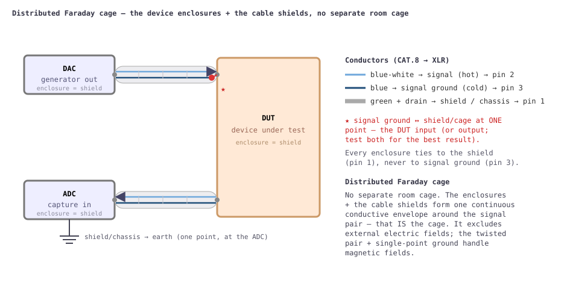

Sub-ppm THD and −150 dBV noise floors only mean something if the wiring between the parts of the bench injects less noise than the DUT produces. This page shows how the generator (DAC), the device under test (DUT) and the capture (ADC) are connected so external electromagnetic fields induce as little voltage as possible on the signal and signal-ground wires. There is no separate room cage: the device enclosures and the cable shields together build one continuous conductive envelope around the signal pair — a distributed Faraday cage, tied through XLR pin 1 and earthed at a single point.

Use a computer twisted-pair CAT.8 patch cable terminated in XLR connectors. CAT.8 carries a double shield: an aluminium/PET foil around each pair plus an overall screen around all four. A foil is a continuous, hole-free screen — unlike the braided shield of coax, a mesh full of small openings that leak fields. The twist is the second weapon: it shrinks the loop area between signal and return so a magnetic field induces equal-and-opposite EMFs in successive twists that cancel.[1]
The connection is unbalanced, carried on one twisted pair, with the foil used as a separate chassis screen:
| CAT.8 wire | XLR pin | Role |
|---|---|---|
| blue-white | 2 (hot) | Signal |
| blue | 3 (cold) | Signal ground (unbalanced return) |
| green + green-white + drain | 1 | Shield → device chassis |
So signal (pin 2) and signal ground (pin 3) are the blue/blue-white twisted pair; the green pair and the drain wire all go to pin 1 as the shield/chassis screen.
Signal ground (pin 3) is bonded to the shield (pin 1) at exactly one place — normally the DUT input or output; test both and keep whichever is quieter. Everywhere else the signal-ground wire is isolated from the shield and the chassis.
If the signal ground also acted as the shield (as in ordinary single-ended coax), any current an external field induces in the shield would flow through the signal return and add directly to the signal at the DUT input. Giving the shield its own conductor (pin 1, bonded to every chassis) and tying the signal ground to it at one point only gives those shield/eddy currents their own return path, out of series with the signal.
Each device's chassis connects to the shield (pin 1), never to signal ground (pin 3). The chassis screens form one continuous shield at cage/earth potential; the signal ground floats on the twisted pair and touches that shield only at the single star point at the DUT.
Electric fields — the usual capacitive hum source — are excluded
entirely by the continuous shield/chassis envelope (the foil around the
pair plus the metal enclosures form one closed conductor). Magnetic
fields aren't blocked by an electrostatic screen; they're out-run by
minimising loop area. The envelope helps a little (the external AC field
drives eddy currents in the shield/chassis walls, which radiate a
weaker opposing field), but the dominant defence is the tiny loop
area of the twisted pair. Faraday's law,
V = ω·B·Aeff:
| Quantity | Estimate (50 Hz) |
|---|---|
| Ambient mains field in a normal room (B)[2] | ~0.1 µT (0.05–1 µT) |
| Residual inside the cage | ~0.05 µT |
| Twisted-pair loop area (pessimistic) | ~10 mm² = 1×10⁻⁵ m² |
| Induced EMF | ≈ 0.16 nV ≈ −196 dBV |
Even a deliberately pessimistic case — no envelope attenuation and 10× the loop area — gives ≈ 3 nV ≈ −170 dBV, still tens of dB below the converter's own noise floor (≈ −150…−160 dBV per bin). Drop the discipline — let the signal ground double as the shield, exposing the whole cable-to-chassis loop — and the same field induces micro-volts (≈ −120 dBV): audible hum. The twist plus single-point ground buys roughly 50–80 dB.
The same wiring feeds whatever sits in the cage — here a twin-T 1 kHz notch and an anti-RIAA filter: